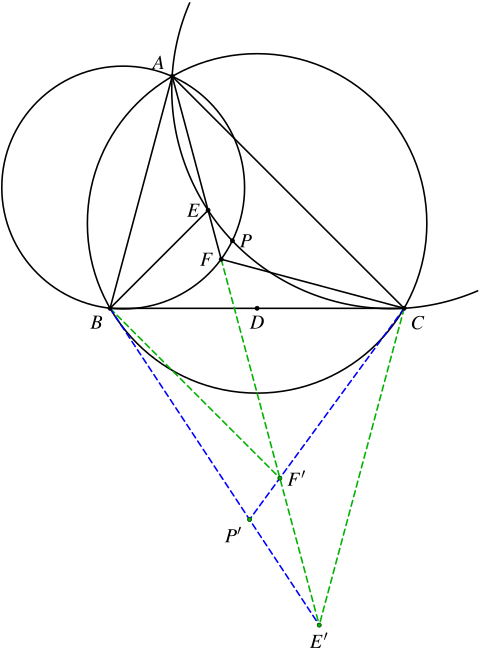

1. 题目
如图，在 △ABC 中，D 为边 BC 的中点，∠BAC 平分线上的两点 E、F 满足 ∠AEB=∠AFC=180∘−∠BAC，△AFB 的外接圆与 △AEC 的外接圆交于 A 及另一点 P。证明：A、P、D 共线。
2. 分析
首先，条件
∠AEB=∠AFC=180∘−∠BAC
等价于
∠ABE=∠BAE=∠CAE=∠ACF
因此 AE=BE，AF=CF。
可知点 E 和 F 在角平分线和垂直平分线的交点上，点 P 是 △AFB 的外接圆与 △AEC 的外接圆的交点，这些点都非常好，因此可以直接用重心坐标来算。
另外，考虑到 △AFB 的外接圆与 △AEC 的外接圆都过点 A，E、F 在 ∠BAC 的平分线上，我们可以考虑对点 A 做 bc 反演，这样 B 和 C 互为对应点，E、F 的对应点依然在角平分线上，P 的对应点变成两条直线的交点，此时算起来就更简单了。
3. 解答
对点 A 作 bc 反演，则 B↔C。记点 E、F、P 的对应点依次是 E′、F′、P′，则
∡AE′C=∡ABE=−∡BAE=−∡BAE′
可知 CE′∥AB。同理可知，BF′∥AC。

以 △ABC 为参考三角形建立重心坐标系。记 [XYZ] 为 △XYZ 的有向面积。
由 CE′∥AB 可知 [E′BC]=−[E′CA]，因此 E′=(−b:b:c)。
同理，由 BF′∥AC 可知 [F′BC]=−[F′AB]，因此 F′=(−c:b:c)。
因此 CF′ 和 BE′ 的交点 P′=(x:y:z) 满足
{x:y=−c:bx:z=−b:c
解得 P′=(−bc:b2:c2)。
注意到 △ABC 的类似重心 K=(a2:b2:c2)，因此 P′ 在点 A 对应的类似中线上，可知 P 在中线 AD 上，命题得证。
不用反演的算法
以 △ABC 为参考三角形建立重心坐标系，则 D=(0:1:1)。
由 ∠AEB=∠180∘−∠BAC 可知
∠ABE=∠CAE=∠BAE
因此 E 在 AB 的垂直平分线上。
由 E 在 ∠BAC 的平分线上可知 E=(λ:b:c)，AB 的垂直平分线的方程为 c2(y−x)+z(b2−a2)=0，将 E 代入，可解得
λ=cbc+b2−a2
因此
E=(bc+b2−a2:bc:c2)
同理可知，F=(μ:b:c) 在 CA 的垂直平分线 b2(x−z)+y(a2−c2)=0 上，解得
μ=bbc+c2−a2
因此
F=(bc+c2−a2:b2:bc)
设 △AFB 的外接圆方程为
−a2yz−b2zx−c2xy+wz⋅(x+y+z)=0
△AEC 的外接圆方程为
−a2yz−b2zx−c2xy+vy⋅(x+y+z)=0
它们的交点满足 wz=vy 恒成立，因此 y=z=0（对应的是交点 A），或（交点 P 满足）
zy=vw
要证明 A、P、D 共线，只需证 w=v 即可。
将 F 代入 △AFB 的外接圆方程，可得
w=z(x+y+z)a2yz+b2zx+c2xy=bc⋅(b2+2bc+c2−a2)a2⋅bc⋅c2+b2⋅c2⋅(bc+b2−a2)+c2⋅(bc+b2−a2)⋅bc=b2+2bc+c2−a2a2c+b⋅(bc+b2−a2)+c⋅(bc+b2−a2)⋅c=b2+2bc+c2−a2a2c+b2c+b3−a2b+bc2+b2c−a2c⋅c=b2+2bc+c2−a22bc+b2−a2+c2⋅bc=bc
同理，将 E 代入 △AEC 的外接圆方程，可得
v=y(x+y+z)a2yz+b2zx+c2xy=bc⋅(b2+2bc+c2−a2)a2⋅b2⋅bc+b2⋅bc⋅(bc+c2−a2)+c2⋅(bc+c2−a2)⋅b2=b2+2bc+c2−a2a2b+b⋅(bc+c2−a2)+c⋅(bc+c2−a2)⋅b=b2+2bc+c2−a2a2b+b2c+bc2−a2b+bc2+c3−a2c⋅b=b2+2bc+c2−a2b2+2bc+c2−a2⋅bc=bc
因此 w=v，命题得证。